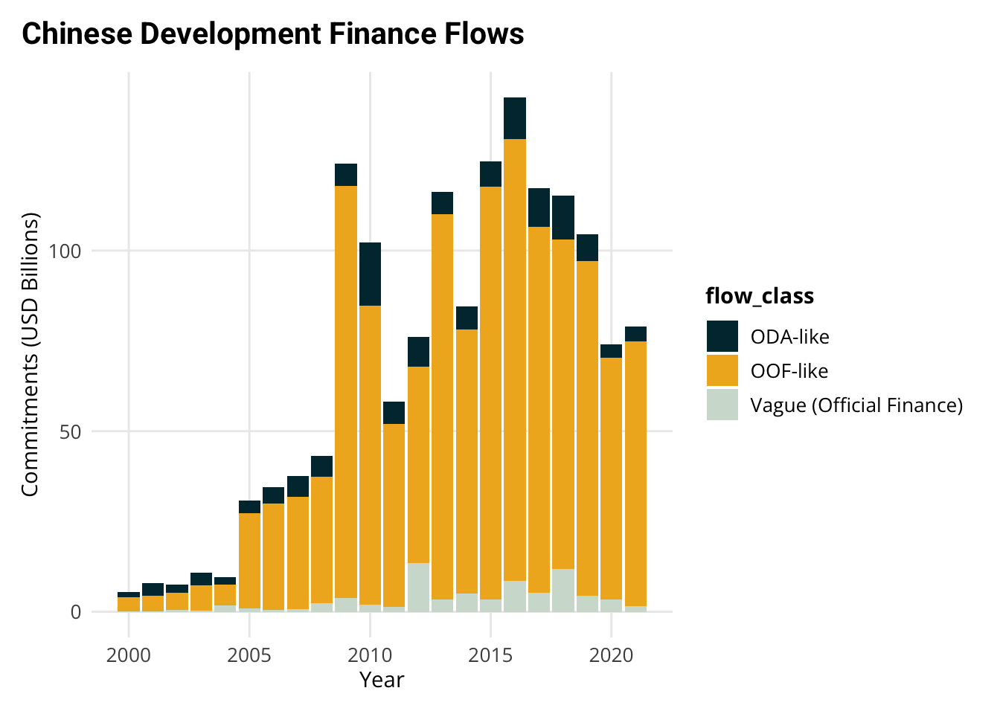

pak::pak("Teal-Insights/aiddataviz")4 Week 2: Make Cool Charts, Right Away (In-Class)
4.1 Learning Objectives
By the end of this session, you will be able to:
- Create exploratory visualizations to understand patterns in Chinese development finance data
- Layer multiple aesthetic mappings to reveal complex relationships
- Transform exploratory visualizations into publication-ready graphics
- Apply AidData’s visual style using the aiddataviz package
- Use AI tools effectively to assist with both exploration and polish
4.2 Today’s Agenda (90 minutes)
- The Two Purposes of Data Visualization (10 min)
- Exploration vs. Communication
- The power of visual thinking
- When to use each approach
- Part 1: Exploratory Data Visualization (35 min)
- Introduction (5 min)
- The value of quick, iterative visualization
- Making lots of charts to find patterns
- Demo: Layering for Insight (15 min)
- Case study: Interest rates and commitment size
- Adding variables through aesthetic mappings
- Using AI to suggest visualization approaches
- Interactive Exercise: Chart Detective (15 min)
- Group exploration of Chinese development finance data
- Creating multiple visualizations
- Finding and sharing insights
- Introduction (5 min)
- Break & Discussion (5 min)
- Share key insights from exploration
- Identify visualizations worth polishing
- Part 2: Creating Publication-Ready Visualizations (35 min)
- From Exploration to Publication (15 min)
- The 6-step process for polishing visualizations
- Using aiddataviz for consistent styling
- Best practices for professional charts
- Interactive Exercise: Polish & Present (20 min)
- Transform exploratory charts into publication quality
- Apply AidData visual identity
- Peer review and feedback
- From Exploration to Publication (15 min)
- Wrap-up & Resources (5 min)
- Key takeaways
- Additional resources
- Preview of next week
Why This Matters for TUFF Analysis
Exploratory Visualization
- TUFF data is complex and often messy
- Visual exploration helps spot patterns that spreadsheets might miss
- Quick iteration helps generate hypotheses about Chinese lending behavior
- Visual thinking can reveal outliers that need deeper investigation
Professional Visualization
- Turn insights into compelling evidence for reports and blogs
- Create consistent, branded graphics that build AidData’s reputation
- Move efficiently from analysis to publication
- Tell clear stories about Chinese development finance
The skills you’re learning today directly support AidData’s mission of bringing transparency to Chinese overseas development finance.
4.3 Setup
Before we begin exploring data visualization, let’s get our environment ready. We’ll need to:
- Install the experimental aiddataviz package
- Install recommended fonts (optional)
- Load required packages
4.3.1 Installing aiddataviz
First, install the aiddataviz package from GitHub:
aiddataviz Package Status
The aiddataviz package is currently under active development. While it’s already useful for creating AidData-styled visualizations:
- Expect breaking changes in the coming weeks
- Some features may change or be refined
- Your feedback will help shape its development
- Treat it as experimental for now
Documentation is available at the aiddataviz website.
4.3.2 Installing Fonts (Optional)
The package works best with specific fonts that match AidData’s visual identity. You can install these fonts with:
aiddataviz::install_aiddata_fonts()
Note
Don’t worry if the font installation doesn’t work - the package will automatically use appropriate backup fonts. We’re still refining this functionality!
4.3.3 Loading Required Packages
Now let’s load the packages we’ll need:
library(tidyverse) # For data manipulation and visualization
library(chinadevfin3) # For Chinese development finance data
library(aiddataviz) # For AidData visualization tools4.3.4 Verifying Setup
Let’s make sure everything is working by creating a simple visualization:
gcdf_yearly_flows |>
ggplot(
aes(x = commitment_year,
y = commitments_bn,
fill = flow_class)
) +
geom_col() +
scale_fill_aiddata() +
theme_aiddata() +
labs(
title = "Chinese Development Finance Flows",
x = "Year",
y = "Commitments (USD Billions)"
)
If you see a chart with AidData’s colors and styling, you’re ready to go! If you run into any issues, don’t worry - we’ll troubleshoot together during class.
Getting Help
If you encounter setup issues: 1. Check the aiddataviz documentation 2. Post in our course Slack channel
4.4 Part 1: Exploratory Data Visualization
Data visualization isn’t just about creating polished graphics for reports. One of its most powerful uses is as a tool for understanding your data and generating new hypotheses. As you explore data, you should:
- Make lots of charts quickly
- Focus on insight, not appearance
- Let each visualization suggest the next
- Use charts to generate questions
4.4.1 A Case Study in Visual Exploration
Let’s explore a specific question about Chinese overseas lending: Is there a relationship between the size of lending commitments and interest rates? And how does this relationship vary across different types of countries?
This is a perfect example of how we can use visualization to understand complex relationships in our data. We’ll build our visualization step by step, with each step adding new insights.
4.4.1.1 Step 1: The Basic Relationship
Let’s start with the simplest possible visualization of our question - a basic scatter plot:
gcdf_country_commitments |>
# Remove any rows with NA in key variables
filter(!is.na(weighted_interest_rate),
!is.na(total_commitments_bn)) |>
ggplot(
aes(x = total_commitments_bn,
y = weighted_interest_rate)
) +
geom_point()This initial plot already shows there might be a relationship, but it’s hard to see the pattern clearly because of how financial data is distributed.
4.4.1.2 Step 2: Making the Scale Intuitive
Financial data often spans several orders of magnitude - from millions to billions of dollars. Regular scales make it hard to see patterns across these different sizes. Let’s improve this with three changes:
- Use a log scale to spread out the data
- Format the labels to be readable
- Set reasonable limits to use the space well
gcdf_country_commitments |>
filter(!is.na(weighted_interest_rate),
!is.na(total_commitments_bn)) |>
ggplot(
# scale 1 billion --> 1, we deal with scale below
aes(x = total_commitments_bn *1e9,
y = weighted_interest_rate)
) +
geom_point() +
scale_x_log10(
labels = scales::label_number(
scale_cut = scales::cut_short_scale(),
prefix = "$"
),
limits = c(15 * 1e6, 175 * 1e9) # From roughly $15M to $175B
)
The
{scales} Package
The {scales} package is an amazing resource for making your axes readable and professional. It can:
- Format numbers (e.g.,
label_number()) - Handle currencies (e.g.,
label_dollar()) - Show percentages (e.g.,
label_percent()) - Abbreviate large numbers (e.g.,
scale_cut_short_scale())
While scales offers many sophisticated options for publication-quality graphics, for exploratory work we just want readable labels. Using scale_cut_short_scale() to show “$1B” instead of “1e9” makes our chart more intuitive to read.
Tip: LLMs are great at reformatting scales.
4.4.1.3 Step 3: Adding Country Labels
The scatter plot shows a pattern, but which countries are where? Let’s add labels:
gcdf_country_commitments |>
filter(!is.na(weighted_interest_rate),
!is.na(total_commitments_bn)) |>
ggplot(
aes(x = total_commitments_bn * 1e9,
y = weighted_interest_rate)
) +
geom_text(aes(label = iso3c), size = 3) +
scale_x_log10(
labels = scales::label_number(
scale_cut = scales::cut_short_scale(),
prefix = "$"
),
limits = c(15 * 1e6, 175 * 1e9)
)Now we can identify specific countries, and some interesting outliers appear. For example, why does Nicaragua have such a high interest rate relative to its commitment size?
4.4.1.4 Step 4: Adding Regional Context
Are there regional patterns? Let’s color-code by region:
gcdf_country_commitments |>
filter(!is.na(weighted_interest_rate),
!is.na(total_commitments_bn)) |>
ggplot(
aes(x = total_commitments_bn * 1e9,
y = weighted_interest_rate)
) +
geom_text(
aes(label = iso3c,
color = region_name),
size = 3
) +
scale_x_log10(
labels = scales::label_number(
scale_cut = scales::cut_short_scale(),
prefix = "$"
),
limits = c(15 * 1e6, 175 * 1e9)
)
Aesthetic Mapping Levels
In ggplot2, you can map aesthetics (like color, size, etc.) at different levels:
- In the main
ggplot(aes()): applies to ALL layers - In individual geoms like
geom_text(aes()): applies only to that layer
Here, we put label and color in geom_text(aes()) because:
- We want these aesthetics to only affect the country labels
- When we add trend lines later, we want them calculated on ALL data, not by region
- If we put
color = region_namein the mainggplot(aes()), our trend lines would be calculated separately for each region
Using AI for Exploration
Try asking AI assistants questions like:
- “What patterns do you notice in this visualization?”
- “Can you help me fix my chart’s scales?”
- “How could I modify this code to explore [specific aspect]?”
4.4.1.5 Step 4: Adding Statistical Context
Is there an overall relationship? Let’s add a trend line:
gcdf_country_commitments |>
filter(!is.na(weighted_interest_rate),
!is.na(total_commitments_bn)) |>
ggplot(
aes(x = total_commitments_bn * 1e9,
y = weighted_interest_rate)
) +
geom_text(
aes(label = iso3c,
color = region_name),
size = 3
) +
geom_smooth(method = "lm", se = TRUE) +
scale_x_log10(
labels = scales::label_number(
scale_cut = scales::cut_short_scale(),
prefix = "$"
),
limits = c(15 * 1e6, 175 * 1e9)
)
Trend Lines with geom_smooth()
geom_smooth() adds a trend line to your plot to help visualize patterns. It can:
- Use different methods (
lmfor linear,loessfor local, etc.) - Show uncertainty with confidence intervals
- Help identify relationships in noisy data
For example:
Linear trend: geom_smooth(method = "lm")
Local smoothing (good for non-linear patterns): geom_smooth(method = "loess")
Learn more in the geom_smooth() documentation.
4.4.1.6 Step 5: Breaking Out by Income Level
Does this relationship vary by country income level? Let’s use faceting to find out:
gcdf_country_commitments |>
filter(!is.na(weighted_interest_rate),
!is.na(total_commitments_bn)) |>
ggplot(
aes(x = total_commitments_bn * 1e9,
y = weighted_interest_rate)
) +
geom_text(
aes(label = iso3c,
color = region_name),
size = 2
) +
scale_x_log10(
labels = scales::label_number(
scale_cut = scales::cut_short_scale(),
prefix = "$"
),
limits = c(15 * 1e6, 175 * 1e9)
) +
geom_smooth(method = "lm", se = TRUE) +
facet_wrap(~income_level_name)
Tip
Faceting for Multiple Views facet_wrap() creates small multiples of your plot, split by a variable. It’s great for:
- Comparing patterns across groups
- Spotting differences in relationships
- Dealing with overlapping data
The ~ in facet_wrap(~variable) is a formula that tells R which variable to use for splitting. Key options:
scales = "free": Let axes vary between facets
ncol or nrow: Control layout
Learn more in the facet_wrap() documentation
4.4.2 What Have We Learned?
This exploratory process has revealed several interesting patterns:
- There appears to be a positive relationship between commitment size and interest rates
- This relationship varies by income level
- There are some notable outliers worth investigating
- Regional patterns exist within income groups
Not all exploratory analysis yields profound implications. It’s valuable nevertheless.
4.4.3 What Questions Does This Raise?
Good exploratory visualization often raises more questions than it answers:
- Why does Niger have such a high interest rate relative to its peers?
- What explains the different slopes across income groups?
- Are these relationships stable over time?
- What other factors might explain these patterns?
4.4.4 Next Steps
This exploration suggests several promising directions:
- Further Research: Look into specific outlier cases
- Additional Visualization: Explore how these patterns change over time
- Statistical Analysis: Consider formal modeling of these relationships
- Domain Expert Input: Discuss findings with colleagues who know specific countries
From Exploration to Communication
If you find patterns worth sharing:
- For colleagues: Add clear titles, labels, and notes
- For reports: Transform into publication-quality visualizations
- For presentations: Simplify to emphasize key points
4.4.5 Practice Exercise: Understanding Distributions
Let’s explore the distributions of key variables in our Chinese development finance data. We’ll use histograms and box plots to understand both overall patterns and how they vary across groups.
Exploring Distributions
When examining a variable’s distribution, it’s helpful to:
- Look at the overall shape first (histogram)
- Then compare across groups (box plots)
- Consider whether you need to transform scales (often for financial data)
Explore these two key variables:
- Weighted Interest Rates
- Start with overall distribution
- Compare across regions
- Compare across income groups
- Consider: What patterns do you see? Any surprises?
- Total Commitments
- Look at the overall distribution
- Try with and without log scale
- Look at regional patterns
- Examine patterns by income group
- Think about: Where is China lending the most? Least?
Useful geoms for Distribution Analysis
geom_histogram(): Overall shape of distributiongeom_boxplot(): Compare distributions across groupsgeom_density(): Smooth version of histogramgeom_violin(): Combination of density and box plot
Try different ones to see which reveals patterns best!
Remember:
- Make lots of charts
- Try different visualization approaches
- Note interesting patterns
- Generate questions for further research
Share what you discover with your colleagues - sometimes fresh eyes see new patterns!
4.5 Part 2: From Exploration to Publication-Ready Graphics
4.5.1 Creating Publication-Ready Graphics with aiddataviz
In the first part of this class, we explored how to use visualization to understand patterns in our data. Now we’ll learn how to transform those exploratory visualizations into polished, professional graphics suitable for reports and presentations.
Help Shape aiddataviz
The aiddataviz package is brand new and actively evolving. While it’s already useful for creating AidData-styled visualizations:
- Expect the package to change significantly in coming weeks
- Some features may be added or refined
- Documentation will be expanded
- Installation processes will be streamlined
Your Input Matters!
We’re actively seeking feedback from AidData staff & communications team to make this package truly useful for your work. We’d love your input on:
- Color palettes that work well for your analysis
- Font choices that match AidData’s brand
- Output formats you commonly need
- Common visualization types you create
- Features that would save you time
This is your chance to help build a tool that makes your work easier!
4.5.2 Our Target: Professional Publication Quality
Let’s work through transforming an exploratory visualization into something publication-ready. We’ll recreate this visualization from AidData’s Belt and Road Reboot Report:
This visualization effectively communicates several key pieces of information:
- Total lending volumes over time
- Composition of lending by flow class
- Key periods in the Belt and Road Initiative
- Clear source attribution and professional styling
4.5.3 Building Our Publication-Ready Visualization
Let’s transform our exploratory visualization into a polished, publication-ready graphic step by step. Think of it like building with Legos - each piece adds something specific and manageable.
4.5.3.1 Step 1: Start with Basic Structure
First, let’s create our basic stacked bar chart:
gcdf_yearly_flows |>
ggplot(
aes(
x = commitment_year,
y = commitments_bn,
fill = flow_class
)
) +
geom_col()
Note
This basic structure already shows our key information - lending volumes over time by flow class. Now we’ll enhance it step by step.
4.5.3.2 Step 2: Improve Visual Organization
We’ll reorder the flow classes to create a more intuitive stacking order:
p <- gcdf_yearly_flows |>
ggplot(
aes(
x = commitment_year,
y = commitments_bn,
fill = fct_reorder2(
.f = flow_class,
.x = commitment_year,
.y = commitments_bn,
.desc = FALSE
)
)
)+
geom_col() +
labs(fill = "")
p
Note
Factor Reordering: Static vs Time Series Data The forcats package gives us two key tools for reordering factors: fct_reorder(): Best for static data (like sorted bar charts)
Orders categories by a single value Perfect when you want to rank things from highest to lowest
fct_reorder2(): Designed specifically for time series data
Takes both time and value into account Creates stable ordering over time Particularly useful for stacked charts like ours
Think: “Static = fct_reorder(), Time Series = fct_reorder2()”
4.5.3.3 Step 3: Apply AidData’s Visual Style
Now we’ll transform the look using AidData’s color palette and theme:
#Using predefined colors from aiddataviz
aiddata_custom_colors <- c(
"ODA-like" = unname(aiddata_colors$wren_twilight),
"OOF-like" = unname(aiddata_colors$spirit_gold),
"Vague (Official Finance)" = unname(aiddata_colors$silver)
)
p2 <- p +
# allows you to define your own colors
scale_fill_manual(values = aiddata_custom_colors) +
theme_aiddata() +
theme(
panel.grid.major.x = element_blank() # Remove vertical gridlines
)
p2
AidData’s Color System
The colors we’re using come from William & Mary’s brand guidelines and have been chosen to:
- Ensure readability
- Maintain institutional identity
- Work well together in various combinations
4.5.3.4 Step 4: Add Direct Labels
Let’s replace the legend with direct labels, making it easier for readers to identify categories:
p3 <- p2 +
annotate(
"text",
x = 2022,
y = c(82, 68, 40),
label = c("Vague", "ODA", "OOF"),
# Match colors to labels explicitly
color = c(
unname(aiddata_colors$silver), # For "Vague"
unname(aiddata_colors$wren_twilight), # For "ODA"
unname(aiddata_colors$spirit_gold) # For "OOF"
),
size = 4,
hjust = 0
) +
# add space for the labels
xlim(2000, 2023) +
# get rid of the old clunky legend
theme(legend.position = "none")
p3
Tip
Direct labels eliminate the need for readers to look back and forth between the visualization and a legend, making the chart easier to understand quickly.
4.5.3.5 Step 5: Add Context with Annotations
Now we’ll add the BRI period markers to provide important context:
p4 <- p3 +
# Add vertical lines for BRI periods
geom_vline(
xintercept = c(2013.5, 2017.5),
linetype = "dashed",
color = aiddata_colors$gray50,
alpha = 0.5
) +
# Add BRI period annotations
annotate(
"text",
x = 2015.5,
y = 165,
label = "Early BRI\n(2014-2017)",
size = 3.5,
color = aiddata_colors$gray50
) +
annotate(
"text",
x = 2019.5,
y = 165,
label = "Late BRI\n(2018-2021)",
size = 3.5,
color = aiddata_colors$gray50
)
p44.5.3.6 Step 6: Polish with Professional Labeling
Finally, we’ll add clear titles, format axes, and include proper source attribution:
p5 <- p4 +
labs(
title = "Official financial flows from China to the developing world,<br>2000-2021",
subtitle = "Constant 2021 USD Billions",
x = NULL,
y = NULL,
caption = "Source: AidData's Global Chinese Development Finance Dataset, Version 3.0"
) +
scale_y_continuous(
labels = scales::label_currency(suffix = " B"),
limits = c(0,170)
)
p5Let’s compare it to the original:
Looks pretty close! That’s something you can easily learn to do well.
If we wanted to, we could take a few more steps:
- draw lines from our labels to the columns
- make the axis titles lighter to draw attention away from them
Once you get to that level, it’s worth talking with your communications team. They are professionals.
4.5.4 Key Elements of Professional Visualizations
Our final visualization incorporates several key elements that make it publication-ready:
- Clear Visual Hierarchy
- Ordered stacking of categories
- Direct labels instead of legend
- Removal of unnecessary grid lines
- Consistent Branding
- AidData color palette
- Professional typography
- Clean, minimal theme
- Contextual Information
- Clear title and subtitle
- Important period markers
- Proper source attribution
- Readable Formatting
- Well-formatted axis labels
- Appropriate scale limits
- Balanced use of space
Creating Your Own Publication Graphics
Create a checklist for your visualizations:
- Is the main message immediately clear?
- Are all elements properly labeled?
- Is the styling consistent with your organization’s brand?
- Have you removed unnecessary visual elements?
- Is the source clearly attributed?
4.6 Resources for Data Visualization
4.6.1 Essential References
- ggplot2 Documentation
- Comprehensive function reference
- Clear examples for each feature
- Best place to look up specific details
- R for Data Science (2e)
- Section 2 focuses entirely on visualization
- Written by ggplot2’s creator, Hadley Wickham
- Perfect balance of theory and practice
- Free online!
4.6.2 Finding Inspiration & Solutions
- ggplot2 Extensions Gallery
- Browse specialized visualization packages
- Find new ways to present your data
- All compatible with ggplot2
- R Graph Gallery
- Examples of many chart types
- Step-by-step instructions
- Code you can adapt
Quick Tip
When you need to create a new type of visualization:
- Check the R Graph Gallery for examples
- Look for relevant ggplot2 extensions
- Ask AI tools to help adapt example code
4.6.3 Advanced Learning
- Storytelling with Data
- Beyond technical skills
- Focus on communication
- Key concepts:
- Understanding context and audience
- Choosing the right visualization
- Eliminating chart clutter
- Using design principles
- Building effective narratives
- Graphic Design with ggplot2
- 💫 Highly Recommended!
- Comprehensive workshop materials
- Free online access
- Topics include:
- Advanced ggplot2 techniques
- Color theory and typography
- Layout and composition
- Creating publication-quality graphics
Learning Path Suggestion
- Start with R4DS for foundations
- Use the galleries for inspiration
- Reference ggplot2 docs for details
- Move to advanced resources when ready
4.6.4 Practice Exercise
Take one of the exploratory visualizations you created today and:
- Find a similar example in the R Graph Gallery
- Identify ways to enhance it
- Use the ggplot2 documentation to implement improvements
- Share your before/after with colleagues
Remember: Great visualization is an iterative process. Start simple, then enhance step by step.
4.7 Wrapping Up: The Power of Data Visualization
4.7.1 Today’s Achievements
Let’s look back at what we’ve accomplished in just 90 minutes:
- Mastered Two Types of Visualization
- Created exploratory visualizations to understand data
- Transformed rough charts into publication-ready graphics
- Learned when to use each approach
- Used Visualization for Discovery
- Layered multiple variables into single charts
- Discovered patterns in Chinese development finance
- Generated new questions for research
- Learned to use aesthetic mappings effectively
- Created Professional Graphics
- Applied AidData’s visual identity
- Built complex visualizations step by step
- Used the aiddataviz package for consistent styling
- Added professional touches like annotations and labels
Most importantly, you now have a toolkit for both exploring data and communicating your findings effectively. While mastering data visualization takes time and practice, you have working examples you can build upon and adapt for your own analysis needs.
4.7.2 Checking Our Learning Objectives
Let’s review what we set out to achieve:
✅ Create exploratory visualizations
- You’ve learned to build layered visualizations
- You know how to map multiple variables to aesthetics
- You can use faceting to compare across groups
✅ Layer aesthetic mappings
- You understand how different mappings reveal patterns
- You can combine multiple variables in one visualization
- You know how to choose effective aesthetic mappings
✅ Transform exploratory charts into publication graphics
- You can follow the 6-step process for polishing charts
- You understand the elements of professional visualization
- You can use aiddataviz for consistent styling
✅ Apply AidData’s visual identity
- You know how to use AidData’s color palettes
- You can apply consistent styling with theme_aiddata()
- You understand the importance of visual consistency
✅ Use AI tools effectively
- You’ve seen how AI can help with visualization code
- You know what questions to ask AI assistants
- You understand how to verify AI suggestions
4.7.3 Resources for Continued Learning
Remember, you have several resources available:
- Our course textbook and examples
- The comprehensive resources we just covered
- The aiddataviz package (though remember it’s still evolving!)
- AI tools to help with coding and troubleshooting
4.7.4 Next Steps
- Practice with Your Own Data
- Try creating exploratory visualizations of your current projects
- Apply the 6-step process to polish important charts
- Use AI tools to help when you get stuck
- Prepare for Next Week
- We’ll dive into data transformation
- Think about what patterns you’d like to investigate
- Consider how visualization and transformation work together
- Get Help When Needed
- Use AI tools for code help
- Reference the resources we covered
- Ask questions in our course forum
- Share challenges and solutions with colleagues
Remember: Learning data visualization is a journey. Focus on understanding the fundamentals and building your skills step by step. You don’t need to memorize everything - knowing where to find help is often more important than memorizing syntax.
See you next week!